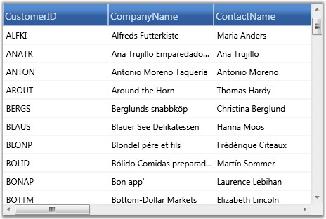

Essential Grid allows you to specify the data source in XAML. XAML binding can be established with the help of Binding class, which provides high level access to the definition of binding to connect the properties of the target binding object to any data source. The specification of a binding in XAML is referred to as Binding Expression. Each binding typically has four components:
· Target object-It corresponds to GridDataControl object
· Target Property-It corresponds to GridDataControl.ItemsSource property
· Binding Source-It can be a list object, a UI element or an object data provider
· Path-It specifies a value in the binding source to be used
Binding Modes
The Binding class also provides you with various modes that let you control how source and target objects of the binding can update each other. Following are the different modes of binding:
· OneWay-Updates the target property only when the source property changes
· TwoWay-Updates the target property when the source property changes and vice versa
· OneTime-Updates the target property only when the application starts or when the Data Context undergoes a change
· OneWayToSource-Updates the source property when the target property changes
Example
Following is a simple XAML binding code that specifies a data source for the grid. It binds the GridDataControl.ItemsSource property to a CollectionViewSource object, which in turn points to an ObservableCollection.
1. Code behind to Create an Observable Collection
|
[C#]
public class Customer : ObservableCollection<Customers> { Northwind northWind;
public Customer() { string connectionString = string.Format(@"Data Source = {0}", LayoutControl.FindFile("Northwind.sdf")); northWind = new Northwind(connectionString); var customer = northWind.Customers.Skip(0).Take(100).ToList(); foreach (var o in customer) { this.Add(o); } } } |
2. Data Source Definition
|
[XAML]
<Window.Resources> <ObjectDataProvider x:Key="customer" ObjectType="{x:Type local:Customer}" /> <CollectionViewSource x:Key="customerSource" Source="{StaticResource customer}" > </CollectionViewSource> </Window.Resources> |
3. XAML Binding
|
[XAML]
<syncfusion:GridDataControl x:Name="grid" AutoPopulateColumns="True" AutoPopulateRelations="False" ItemsSource="{Binding Source={StaticResource customerSource}}"> </syncfusion:GridDataControl> |
The following image shows the output of the above given code:

Figure 101: Grid Data control with data bound using XAML
The GDC is bound with data using XAML code.